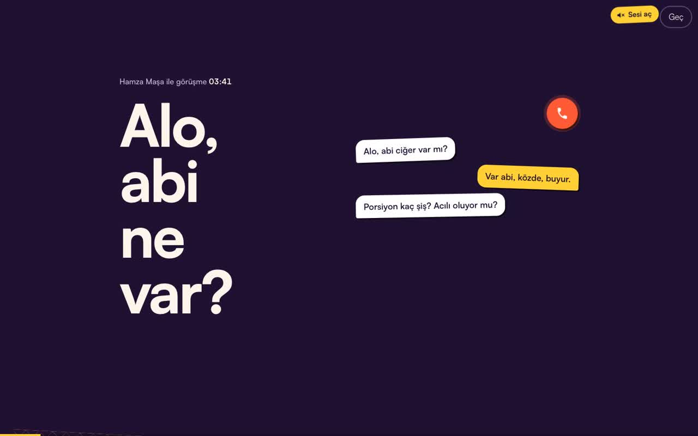
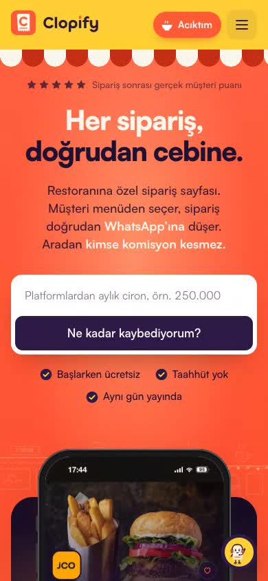
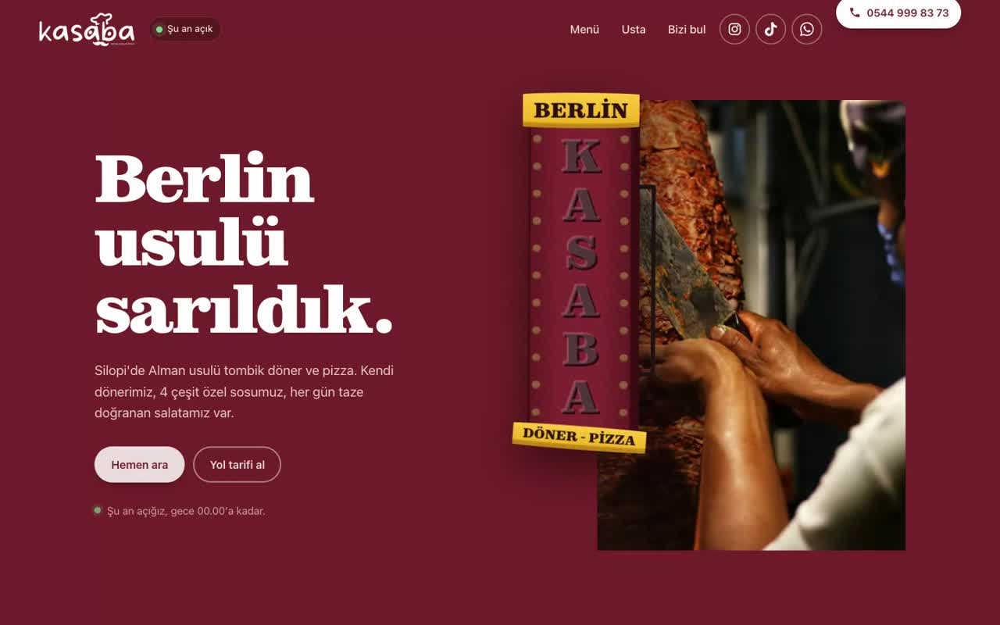

PortföyümYaptığım işler ve örnek siteler
ClopifyRestoranlara komisyonsuz sipariş sayfası CraftoonWeb sitesi ve sosyal medya stüdyomuz
CraftoonWeb sitesi ve sosyal medya stüdyomuz
Yaptığım bir site

Kasaba BerlinSilopi'de bir döner dükkânının sitesiSen de böyle bir sayfa ister misin?
Instagram ve TikTok biyografine koyacağın, tüm bağlantılarını tek yerde toplayan, sana özel tasarlanmış bir sayfa.
Bana da yapMaruf Acet, 2026.